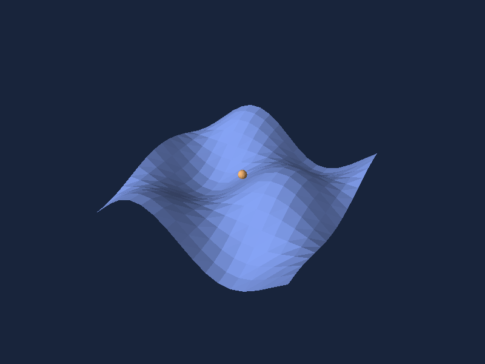

Meshes and groups
A Mesh copies finite vertices and triangle indices and validates index ranges and nondegenerate faces. The same immutable mesh can be shared by many Shape.FromMesh instances. Material controls opaque color, fixed directional lighting, and whether back faces render.
using System.Numerics;
var mesh = new Mesh(
[new Vector3(-1, 0, 0), new Vector3(1, 0, 0), new Vector3(0, 1, 0)],
[0, 1, 2]);
var face = Shape.FromMesh(mesh, new Material(0xFF86A9FF, lit: false))
.Named("Panel");
var scene = new Scene().Add(face).Add(face.At(0, 0, -1));
Shape.Group(children) applies its transform to every child. At, Rotated, and Scaled set absolute local values and return a new shape. The order is local scale, local rotation, local translation, then parent transforms. A leaf name survives picking through groups. Lines and arrows are triangle meshes, so they obey the same depth and picking rules.

The surface factory builds a 16 × 16 grid from shared indexed vertices. The executable examples render it without MAUI, and the demo adds orbit and selection.